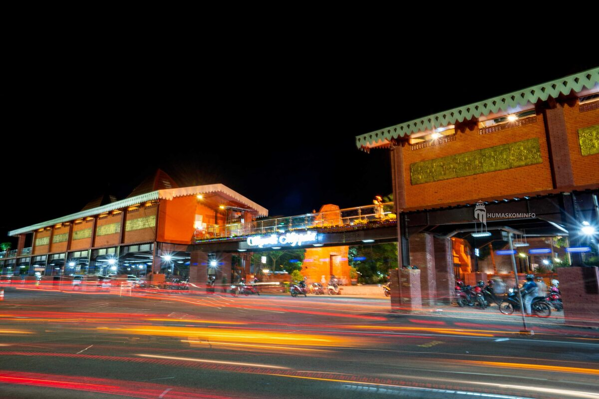

Saya lahir dan besar di Mojokerto, Jawa Timur, sebuah kota di sebelah barat daya Surabaya. Mojokerto punya kaitan erat dengan sejarah Kerajaan Majapahit, karena kawasan Trowulan di wilayah ini diyakini pernah menjadi pusat kerajaan tersebut.

Pemandangan malam salah satu sudut kota Mojokerto yang ramai oleh lalu lintas dan lampu kota.